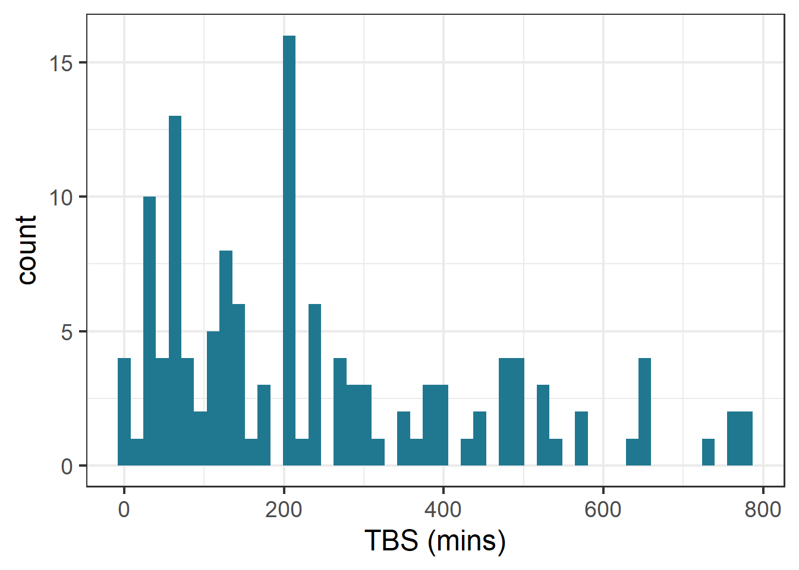
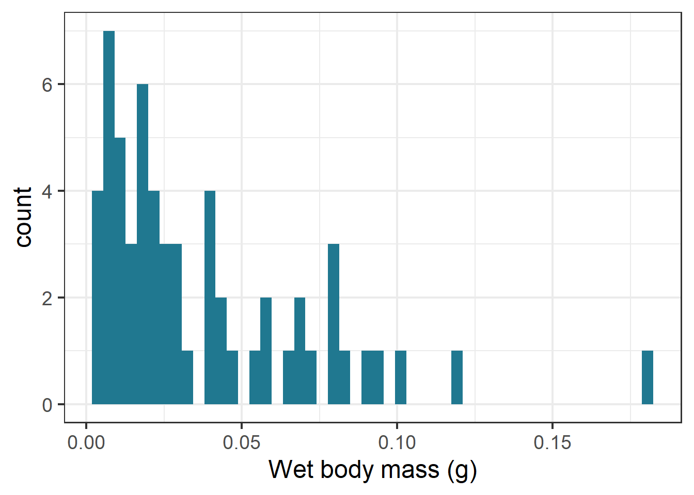
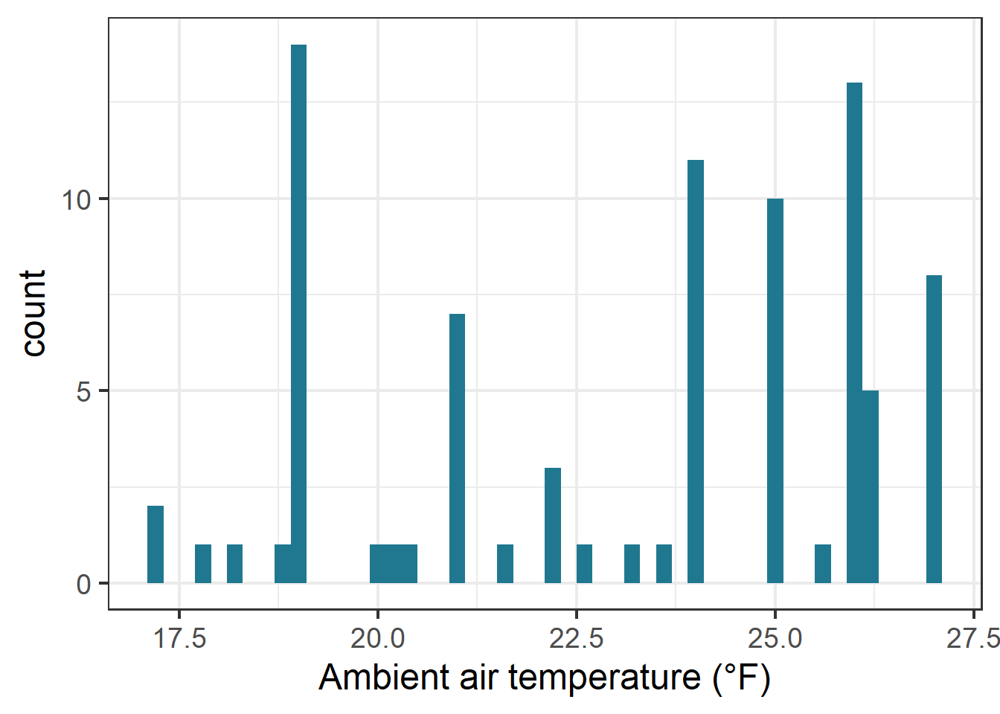
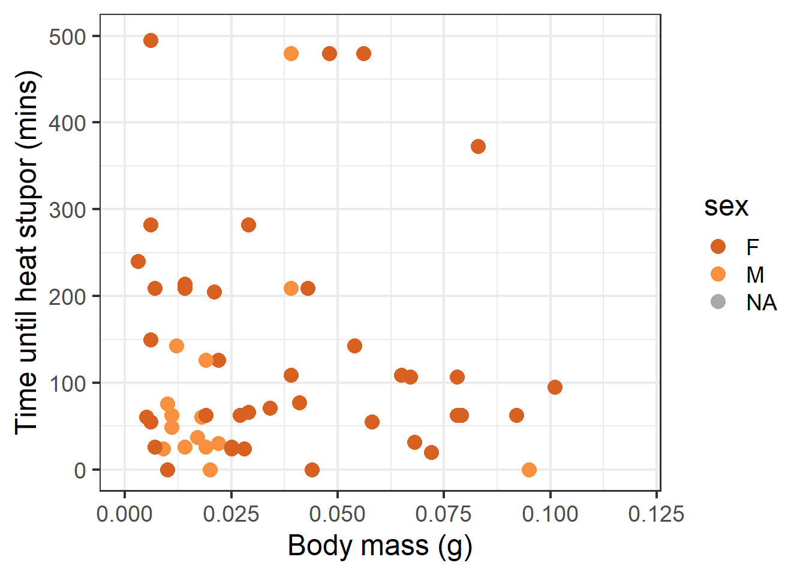
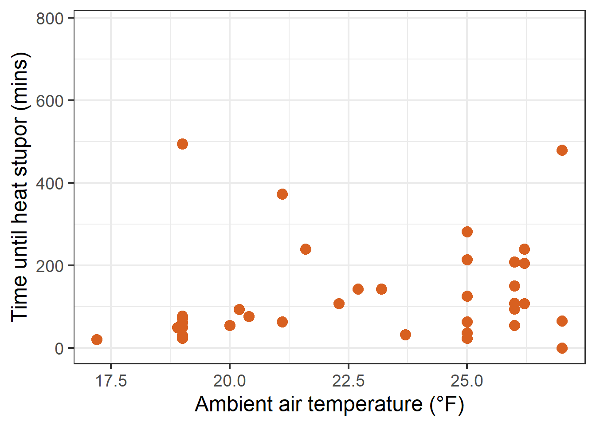
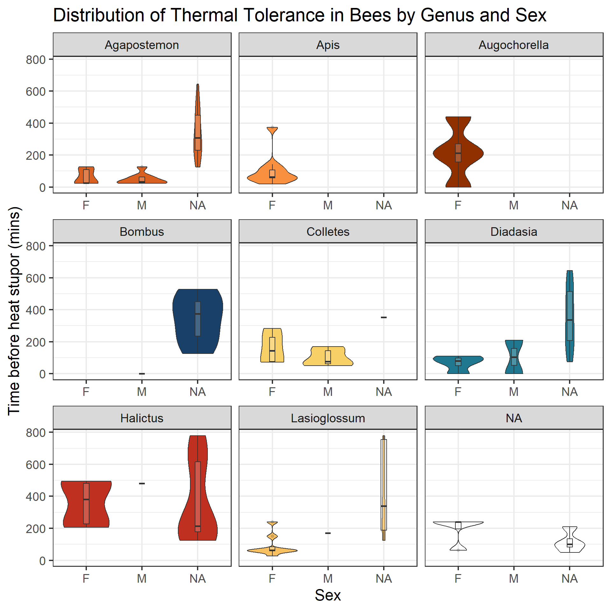
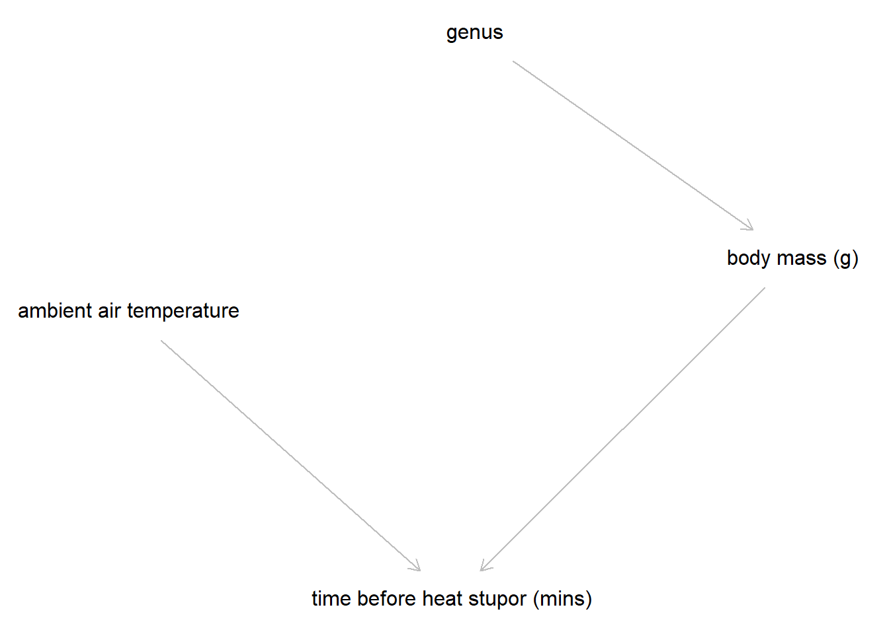

California native bees on a flower. Photo shows a male Agapostemon bee (left) next to a smaller bee (likely of genus Halictus)
Dataset background and motivations
Native bee species are essential in supporting natural ecosystems because the reproduction of nearly 90% of all flowering plants depends on pollinators (Ollerton et al. 2011). Declines in bee populations due to land use and climate change threaten biodiversity and food security for the human population.
Bees are susceptible to climate change because their flight activity can increase body temperature beyond ambient air temperature (Heinrich and Buchmann 1986), forcing them to pollinate beyond their critical thermal range or stop pollinating altogether in high temperatures (Suni and Dela Cruz 2021). Body size is another trait of interest because of its impact on an individual’s ability to release heat, depending on their surface area to volume ratio. Further, sex has been identified as a potential variable in thermal tolerance (Maebe et al. 2021)
With increasing frequency of extreme weather events, it becomes critical to understand the variables that influence pollinator thermal tolerance as it relates to supporting ecosystem services. Further, an increasing scientific interest in species beyond European honey bees (Apis mellifera) is paramount to preserving biodiversity.
California alone has approximately 1,600 native bee species (U.S. Fish and Wildlife). As a student researcher in UCSB’s Cheadle Center for Biodiversity and Ecological Restoration, I became particularly interested in the intersect between climate change and pollinator conservation in California. As part of my independent research project, I collected a dataset simulating a 40°F (104°C) heatwave on an assemblage of bees from mainland Santa Barbara and Santa Cruz Island. Thermal tolerance was measured as time until heat stupor (TBS) in minutes. Stupor was defined in research methods as a lack of response to physical stimuli, however, many bees were taken out of the experiment because they died. Importantly, some simulation trials were stopped when they could not be continued after a period of many hours. This was factored into the data as a ‘censor’ indicator. Data included geographic information from collection sites, ambient air temperature, wet and dry mass, and intertegular distance as a proxy for body size. Species and sex information identified between myself, Dr. Katja Seltmann, and Dr. Jamie Pawelek.
Based on currently available research, I predicted that the primary predictive variables for thermal tolerance would be genus due to physiological level differences, body mass, and ambient air temperature as a baseline for thermal stress.
Preliminary data exploration
Cleaning
Code
# Load dataset from csvtherm <-read.csv(here::here("posts", "stats_model", "data", "hyperthermal-tolerance.csv"), # Standardize values that are NA na.strings =c("", "NA"))# Clean original datatherm_clean <- therm %>%# Standardize naming conventions in columns janitor::clean_names() %>%# Recode values in 'sex' column to follow the same conventionsmutate(sex =recode( sex,male ="M",Male ="M",female ="F",Female ="F" )) %>%# Recode genus names to match capitalizationmutate(genus =recode( genus,agapostemon ="Agapostemon",augochorella ="Augochorella",bombus ="Bombus",colletes ="Colletes",diadasia ="Diadasia",halictus ="Halictus",lasioglossum ="Lasioglossum","Lasioglossum "="Lasioglossum",nomada ="Nomada",Augochlorella ="Augochorella" ) ) %>%group_by(genus) %>%filter(n() >3) %>%ungroup()
Visualizing the distribution of variables of interest
Code
ggplot(therm_clean, aes(x = tbs_mins)) +geom_histogram(bins =50, fill ="#207890FF")+labs(x="TBS (mins)", y ="count")

Histogram of thermal tolerance data.
Code
ggplot(therm_clean, aes(x = mass_g)) +geom_histogram(bins =50, fill ="#207890FF")+labs(x="Wet body mass (g)", y ="count")

Histogram of bee body mass (g) data.
Code
ggplot(therm_clean, aes(x = ambient_air_temperature_c)) +geom_histogram(bins =50, fill ="#207890FF")+labs(x="Ambient air temperature (°F)", y ="count")

Histogram of ambient air temperature data.
Based on preliminary data exploration through histograms to visualize the distribution of the continuous variables of interest, I saw that thermal tolerance (TBS) and body mass appeared right skewed. The shape of the air temperature histogram can be explained by there being some experiments with a greater number of individuals concentrated in one assay. To confirm this in the response data, I checked the skewness value.
the skewness value for TBS is 0.9472131. A skewness value > 0 indicates positive/ right-skewed data.
Visualizing the interaction between variables
Code
ggplot(data = therm_clean, aes(x = mass_g, y = tbs_mins, color = sex)) +geom_point(size =4) +scale_x_continuous(limits =c(0, 0.12)) +scale_y_continuous(limits =c(0, 500)) +labs(x ="Body mass (g)", y ="Time until heat stupor (mins)", main ="Sex") +scale_color_paletteer_d("palettetown::charizard", na.value ="darkgrey")

Scatterplot of TBS (mins) and wet body mass (g).
Code
ggplot(data = therm_clean, aes(x = ambient_air_temperature_c, y = tbs_mins))+theme(legend.position ="none")+geom_point(size =4, color ="#D86020FF") +labs(x ="Ambient air temperature (°F)", y ="Time until heat stupor (mins)") +scale_color_paletteer_d("palettetown::charizard")

Scatterplot showing TBS (mins) verus ambient air temperature measured at time and site of collection.
The scatterplots rendered above show a fairly nonlinear response in thermal tolerance to each variable.
Code
ggplot(data = therm_clean, aes(x = sex, y = tbs_mins)) +geom_violin(aes(fill = genus)) +geom_boxplot(width =0.1, alpha =0.2) +facet_wrap(~genus, axes ="all_x") +theme(legend.position ="none") +labs(title ="Distribution of Thermal Tolerance in Bees by Genus and Sex", x ="Sex", y ="Time before heat stupor (mins)") +scale_fill_paletteer_d("palettetown::charizard")

Violin plot displaying the central tendency and distribution of TBS across genera by sex.
Looking at the central tendency and distribution of TBS in relation to genus and sex, the data across sex does not appear to represent the entire sample, and there are a fair amount of NA values to account for before trying to construct a model.
Subsetting data
Based on the exploratory data analysis summarized in the previous section, I chose to exclude genera with fewer than 3 observations from further analysis, and to not include sex as a predictor as it does not represent each genus very equally, making it difficult to truly say how sex may affect overall thermal tolerance across genera. Further, I filtered for TBS values greater than 0, as some bees captured died before even being put into the experimental conditions.
Code
# Subset data frame to only include genera with greater than 3 observationstherm_subset <- therm_clean %>%# Drop rows with NAs from variables of interestdrop_na(tbs_mins, mass_g, ambient_air_temperature_c, genus) %>%filter(tbs_mins >0, # Drop Augochorella because only 2 individuals remain after dropping NAs genus !="Augochorella") %>%select(catalog_number, genus, sex, tbs_mins, censor, mass_g, ambient_air_temperature_c)
Drawing a DAG
Code
dag_code <-dagitty('dag {bb="0,0,1,1""ambient air temperature" [pos="0.309,0.307"]"body mass (g)" [pos="0.745,0.282"]"time before heat stupor (mins)" [pos="0.521,0.443"]genus [pos="0.536,0.176"]"ambient air temperature" -> "time before heat stupor (mins)""body mass (g)" -> "time before heat stupor (mins)"genus -> "body mass (g)"}')plot(dag_code)

Directed acyclic graph (DAG) of theorized variables necessary to include in a model for bee thermal tolerance
With the background knowledge from prior research, exploratory analysis, and cleaned data, I created a DAG to represent the possible causative relationships between thermal tolerance and other variables included in sampling. Genus is thought to influence thermal tolerance through physiological variables such as body mass. Air temperature (Heinrich and Buchmann 1986) has long been thought to influence heat tolerance as warmer ambient conditions may make it more difficult for bees to thermoregulate during flight.
Choosing a model
The histogram created to visualize the distribution of my response variable indicated a right skew in the data, which was confirmed by a measure of skewness. These data are all positive and continuous values.
These data attributes fit the primary assumptions of gamma distributed data.
The Gamma distribution is a continuous probability distribution modeling right skewed positive data. The distribution takes on two parameters, a shape parameter (a), and a scale parameter (). The shape parameter determines the skewness and modality of the distribution, while the scale parameter controls the spread and mean.
Limitations in survivorship data
A caveat to using this distribution is the aforementioned census variable, which is extremely common in survivorship data such as these. The censor variable indicates if the event of interest was actually observed by the end of the study. This directly affects the predicted thermal tolerance by limiting the spread of the data, thus likely decreasing the mean thermal tolerance of all individuals. This inherently links to the way tolerance is predicted, which suggests a more complex model such as a mixed effect model or a survivorship specific model may fit the data generating process better.
However, for the purposes of understanding the relationships through a more simplified model and learning how to apply the family ‘Gamma’ to a model, I explored the effects of the variables described in the DAG using:
The linearized predictor link function allows the interaction that we would expect between genus and mass, as mass is variable by genus. This allows flexibility between predicted lines by genus.
Simulated model outcome
To test the assumptions of the Gamma distributed model using hypothetical predictors, I ran a model simulation to demonstrate that the GLM using Gamma and a log link function will return the expected parameters.
Code
# Simulate data for sim model# Make model assumptionsn <-1000# Sample sizebeta_0 <-0.5# Interceptbeta_1 <--0.2# Coefficient effect 1beta_2 <-0.8# Coefficient effect 2phi <-2# Gamma shape parameter# Generate data for predictorspred_1<-rnorm(n, mean =0, sd =1)pred_2 <-rnorm(n, mean =6, sd =2)# Linearized model to predict log expected timelog_mu <- beta_0 + beta_1*pred_1 + beta_2*pred_2mu <-exp(log_mu) # Simulate response variableresp <-rgamma(n, shape = phi, scale = mu / phi)# Put predictors into a dataframesim_data <-data.frame(resp, pred_1, pred_2)sim_fit <-glm(resp ~ pred_1 + pred_2,family =Gamma(link ="log"),data = sim_data)# Create summary objectsim_summary <-summary(sim_fit)# Pull dispersion value from modelsim_shape <-1/sim_summary$dispersion # Pull out just estimates and standard errorcoef_est <- sim_summary$coefficients[, 1] coef_se <- sim_summary$coefficients[, 2]# List the assumed valuesassumed <-c("(Intercept)"= beta_0,"pred_1"= beta_1,"pred_2"= beta_2)# Create comparison data framecomp_table <-data_frame(Parameter =names(coef_est),Given = assumed[names(coef_est)],Estimate = coef_est,SE = coef_se)# Create new table to append shape values onshape_table <-data_frame(Parameter ="shape", Given = phi, Estimate = sim_shape, SE =NA)# Append shape values to original dfcomb_table <-bind_rows(comp_table, shape_table)# Create tablekable(comb_table, digits =2)
Parameter
Given
Estimate
SE
(Intercept)
0.5
0.47
0.07
pred_1
-0.2
-0.18
0.02
pred_2
0.8
0.80
0.01
shape
2.0
2.16
NA
Summary table comparing of input assumption values to the output estimates for a Gamma GLM using a log link function.
Here, I simulate data assuming the response data is Gamma distributed (positive continuous and right skewed). Using two continuous predictor variables (generated using rnorm()), this demonstrates that the assumed parameters can be recovered in a GLM using the family Gamma and a log link function. We look to compare the coefficients put into the model versus the summary. Based on the comparison between inputs and outputs, the coefficient values are very similar. Additionally, the dispersion parameter output by the model is \[\phi = 1/dispersion\], so the shape parameter expected is also returned by the model. Increasing the sample size to reduce varianceresult in even closer numbers to the assumed values. This is a very simplified example to demonstrate the functionality of the data generating process and modeling. In actual ecological data, making assumptions in order to fit simulated data would be much harder due to the complexity of the system.
Generating two models
Using the principles demonstrated in the data simulation, I ran two models to observe the effect of including ambient air temperature as a predictor.
Model 1: Modeling thermal tolerance with only mass and genus
Part of the motivation for the collection of this dataset was to investigate if ambient air temperature at the time of collection of individuals affected predicted thermal tolerance. Model 1 excludes ambient air temperature to visualize the interaction between mass and genus alone.
To model predicted data, initially I utilized expand_grid() as a convenient way to create a predicted data grid.
Code
# Generate predicted data grid with predictorspred_data1 <-expand_grid(mass_g =seq(min(therm_subset$mass_g, na.rm =TRUE),max(therm_subset$mass_g, na.rm =TRUE),length.out =100),genus =unique(therm_subset$genus))pred_ci1 <-predict(mod1,newdata = pred_data1,type ="link",se.fit =TRUE)pred_results1 <- pred_data1 %>%mutate(# Generate predictions in link spacelink_vals = pred_ci1$fit,# Generate column of standard errors from link space valuesse = pred_ci1$se.fit,# Back out of link space, generate response predictionspred_tbs =exp(link_vals),# Generate confidence interval (~2 standard deviations away from predicted values in the response space)lower =exp(link_vals -1.96* se),upper =exp(link_vals +1.96* se) )
Plot of predicted time before heat stupor values from a Gamma GLM for different bee genera with mass and genus as predictor values. X axis scale is unadjusted for taxonomic specific body mass.
Visualizing the outcome of the predictions based on the model 1 Gamma GLM, all predictions fall in the same range of body mass prediction values (0-0.1 grams). However, based on the ecological background of this study, we know that these body mass ranges should vary from genus to genus based on variation in physiology due to taxonomy. This means that the way the data is represented above is an inaccurate depiction of possible observations.
Correcting predictions for genus level variation in body mass
To correct this, I built a function to build the prediction grid based on the minimum and maximum body mass for each genus, and created predictions with those values to more accurately display modeled results.
Code
# Create a function to build a dataframe for each genus with mass range boundariesmod1_genus_fun <-function(genus_name) { genus_subset <- therm_subset %>%filter(genus == genus_name)# Build prediction grid for given genusdata.frame(mass_g =seq(min(genus_subset$mass_g, na.rm =TRUE),max(genus_subset$mass_g, na.rm =TRUE),length.out =100 ),genus = genus_name )}# Create a list of all unique genus_namestotal_genera <-unique(therm_subset$genus)# Use function to build a prediction dataframe for all genera in modeladj_pred_data <-map_dfr(total_genera, mod1_genus_fun)# Predict values from predicted data with Gamma GLMadj_pred_ci <-predict( mod1,newdata = adj_pred_data,type ="link",se.fit =TRUE)# Build dataframe of resultsadj_pred_results <- adj_pred_data %>%mutate(link_vals = adj_pred_ci$fit,se = adj_pred_ci$se.fit,pred_tbs =exp(link_vals),lower =exp(link_vals -1.96* se),upper =exp(link_vals +1.96* se) )
Plot of predicted TBS values from a Gamma GLM by genera with mass and genus as predictor values.
Now, the mass values are appropriately adjusted to ecologically feasible outcomes.
Model 2: Modeling thermal tolerance including ambient air temperature
Now, to visualize thermal tolerance response based on genus, body mass, and air temperature, a second model used air temperature as an additive variable.
Using the same function skeleton to create a prediction grid with flexible scales for mass, ambient air temperature is added in the predictions as a constant mean of the subsetted data.
Code
# Create another function with ambient air temperature as a columnmod2_genus_fun <-function(genus_name) { genus_subset <- therm_subset %>%filter(genus == genus_name)# Build prediction grid for THIS genusdata.frame(mass_g =seq(min(genus_subset$mass_g, na.rm =TRUE),max(genus_subset$mass_g, na.rm =TRUE),length.out =100 ),genus = genus_name,ambient_air_temperature_c =mean(genus_subset$ambient_air_temperature_c, na.rm =TRUE) )}# Use new function and the same genus names for new dataframepred_data2 <-map_dfr(total_genera, mod2_genus_fun)# Predict values pred_ci2 <-predict( mod2,newdata = pred_data2,type ="link",se.fit =TRUE)# Build resultspred_results2 <- pred_data2 %>%mutate(link_vals = pred_ci2$fit,se = pred_ci2$se.fit,pred_tbs =exp(link_vals),lower =exp(link_vals -1.96* se),upper =exp(link_vals +1.96* se) )
Plot of predicted TBS values from a Gamma GLM by genera with mass, ambient air temperature, and genus as predictor values.
Comparing the change between how predicted TBS is modeled by the Gamma GLM with and without ambient air temperature as an additive effect, we see that the slope of response values slightly flips for some genera, or even more dramatically in the case of Halictus bees. This could possibly be occurring for many reasons from an ecological standpoint, but statistically it is likely that the simpler model here was absorbing some effects that are explained by temperature, so adding temperature causes the overall predicted response to change.
Comparing models and interpreting outputs
Using the package {broom}, I produced a summary table to compare models 1 and 2 including coefficient significance indicators.
Code
# Using broom package to clean up summary and return only term, estimate, std.error, statistic, pval, and model which I callmod1_sum_tidy <-tidy(mod1) %>%mutate(model ="Model 1")mod2_sum_tidy <-tidy(mod2) %>%mutate(model ="Model 2")# Combine modelsmodel_comb <-bind_rows(mod1_sum_tidy, mod2_sum_tidy)# Add back the same significance indicators as the modelmodel_comb <- model_comb %>%mutate(sig =case_when( p.value <0.001~"***", p.value <0.01~"**", p.value <0.05~"*", p.value <0.1~".",TRUE~"" ))# Create desired df for tablesummary_table <- model_comb %>%select(model, term, estimate, std.error, statistic, p.value, sig) %>%arrange(term, model)# Create tablekbl(summary_table, caption ="Comparison of Gamma GLM Models for TBS",digits =3,align ="lcccccc" ) %>%kable_classic(full_width =FALSE, html_font ="Arial") %>%add_header_above(c(" "=1, "Coefficient Details"=6))
Comparison of Gamma GLM Models for TBS
Coefficient Details
model
term
estimate
std.error
statistic
p.value
sig
Model 1
(Intercept)
3.841
0.260
14.746
0.000
***
Model 2
(Intercept)
0.308
0.972
0.317
0.753
Model 2
ambient_air_temperature_c
0.137
0.035
3.902
0.000
***
Model 1
genusApis
0.278
0.507
0.549
0.586
Model 2
genusApis
-0.142
1.464
-0.097
0.923
Model 1
genusColletes
0.767
0.337
2.277
0.028
*
Model 2
genusColletes
1.173
0.729
1.609
0.116
Model 1
genusDiadasia
0.575
0.515
1.115
0.271
Model 2
genusDiadasia
1.078
0.919
1.172
0.249
Model 1
genusHalictus
1.891
0.353
5.363
0.000
***
Model 2
genusHalictus
2.458
0.659
3.729
0.001
***
Model 1
genusLasioglossum
0.605
0.346
1.748
0.088
.
Model 2
genusLasioglossum
1.121
0.634
1.769
0.085
.
Model 1
mass_g
6.884
7.630
0.902
0.372
Model 2
mass_g
22.819
23.831
0.958
0.345
Model 2
mass_g:genusApis
-2.876
30.147
-0.095
0.925
Model 2
mass_g:genusColletes
-13.555
29.861
-0.454
0.653
Model 2
mass_g:genusDiadasia
-26.095
26.446
-0.987
0.330
Model 2
mass_g:genusHalictus
-30.419
27.127
-1.121
0.269
Model 2
mass_g:genusLasioglossum
-33.575
37.057
-0.906
0.371
The change in significance of intercepts between model 1 and 2 here suggests that model 2, which includes temperature, might be accounting for variation in the response with variation in the temperature variable. This has the effect of deflating the significance of the intercept itself.
Estimates for coefficients here represent differences from the reference genus (Agapostemon), and interaction coefficients from model 2 represent how the effect of mass varies by genus.
The positive coefficient estimates for Halictus are denoted as being significantly different from the reference, so genus Halictus has a greater positive effect on TBS.
Neither model found mass to be significantly associated with TBS, indicated by the p-values for the interaction terms. This tells us that mass is not a good predictor of TBS on this dataset. However, this does not suggest it should be excluded from the model, as ecologically we know that mass is linked to genus.
Comparing the two models, the presence of temperature as a covariate increases the predicted thermal tolerance at the reference level (shown by a positive coefficient estimate in model 2).
Overall, genus level differences remain ecologically meaningful, with genus Halictus showing higher relative effect on thermal tolerance. Adding air temperature to the GLM has a positive effect on TBS and changes the values of the model intercept and genus coefficients, suggesting that temperature does help explain variation in TBS as a response. Based on these outcomes, model 2 presents a more realistic picture of thermal tolerance across genera.
However, as mentioned in the background of the study, known censor effects in the experiment would result in potentially inaccurate variance in measured thermal tolerance. This means that censor should necessarily be included in any modeling of this data, which introduces the case for survivorship models.
Citations
Frost, J. Gamma distribution: Uses, parameters & examples - statistics by Jim. https://statisticsbyjim.com/probability/gamma-distribution/
Gamma distribution | gamma function | properties | PDF. https://www.probabilitycourse.com/chapter4/4_2_4_Gamma_distribution.php
The Gamma Distribution. R: The gamma distribution. https://stat.ethz.ch/R-manual/R-devel/library/stats/html/GammaDist.html
GeeksforGeeks. (2025, July 12). Skewness in R programming. https://www.geeksforgeeks.org/r-language/skewness-and-kurtosis-in-r-programming/
Heinrich, B., & Buchmann, S. L. (1986). Thermoregulatory physiology of the Carpenter Bee,Xylocopa varipuncta. Journal of Comparative Physiology B, 156(4), 557–562. https://doi.org/10.1007/bf00691042
Maebe, K., De Baets, A., Vandamme, P., Vereecken, N. J., Michez, D., & Smagghe, G. (2021). Impact of intraspecific variation on measurements of thermal tolerance in Bumble Bees. Journal of Thermal Biology, 99, 103002. https://doi.org/10.1016/j.jtherbio.2021.103002
Ollerton, J., Winfree, R., & Tarrant, S. (2011). How many flowering plants are pollinated by animals? Oikos, 120(3), 321–326. https://doi.org/10.1111/j.1600-0706.2010.18644.x
Science: Pollinators. California Department of Fish and Wildlife. https://wildlife.ca.gov/Science-Institute/Pollinators
Suni, S. S., & Dela Cruz, K. (2021). Climate-associated shifts in color and body size for a tropical bee pollinator. Apidologie, 52(5), 933–945. https://doi.org/10.1007/s13592-021-00875-5
Citation
BibTeX citation:
@online{bonnet2025,
author = {Bonnet, Nathalie},
title = {Predicting {Thermal} {Tolerance} in {California} {Bees} Using
a {Gamma} {Distribution} {Linear} {Model}},
date = {2025-12-11},
langid = {en}
}
For attribution, please cite this work as:
Bonnet, Nathalie. 2025. “Predicting Thermal Tolerance in
California Bees Using a Gamma Distribution Linear Model.”
December 11, 2025.
![]()